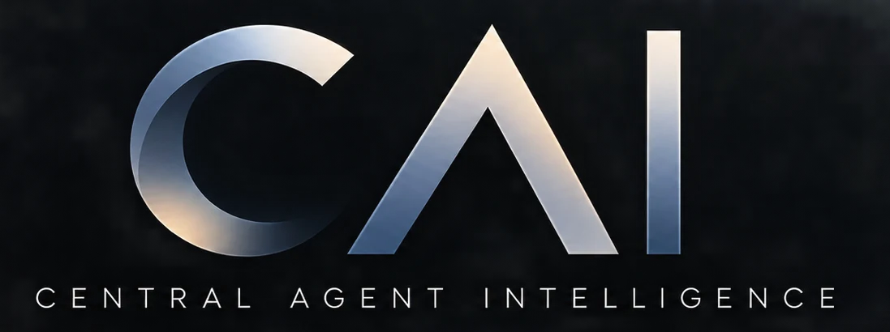

SCOUT
Discovers and qualifies candidates against the mission, with evidence of what was found.
Find what matters. Know when it changes. Act with authority.
Give CAI an objective. It discovers relevant candidates, watches for material change, evaluates what deserves attention and can act within an explicit authority boundary. The product is a persistent intelligence mission, not a meter for agent hours.

CAI keeps the objective, candidates, evidence, watched state, material changes and outcomes together. Each component has a defined role.
Discovers and qualifies candidates against the mission, with evidence of what was found.
Maintains a baseline and reports meaningful changes instead of repeating unchanged information.
Evaluates relevance and significance. A good judgement does not grant permission to act.
Checks fresh authority before an external effect; records what was permitted and what happened.
Find acquisition candidates and watch conditions that make a deal actionable.
Discover buyers, partners and relevant changes in their needs.
Watch capacity, availability, pricing and dependencies.
Find evidence, technologies and contradictions as they emerge.
Find calls and partners; monitor eligibility and deadlines.
Follow named entities and conditions that can change a decision.
In a bounded pilot, we define the objective, sources, monitored changes, decision criteria and permitted effects. We measure discovery, change detection, judgement and evidence against that scope.
JEV can recommend an action. HEIMEL still checks current identity, mandate, rights and constraints before the effect. A reference implementation exists; production source adapters, persistent watch state and customer integrations are configured and validated per pilot.
CAI is a prototype. The public page does not imply an autonomous production deployment.